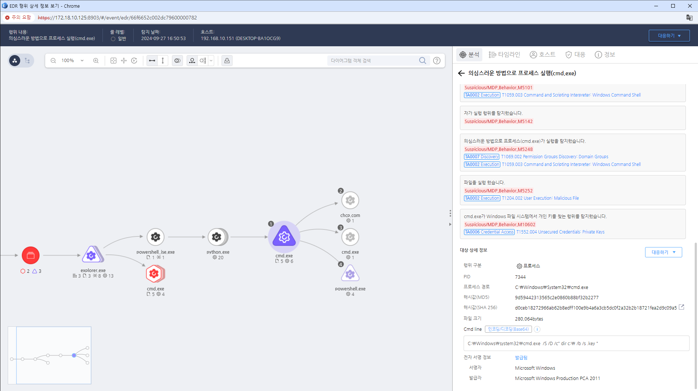

MITRE ATT&CK 액션을 기준으로 대응 방안을 작성
findstr, dir 등의 명령을 통해 .key 파일을 찾는 행위를 탐지
 https://172.18.10.125:8903/#/event/edr/66f6652c002dc79600000782
IDS/IPS를 사용하여 네트워크 트래픽에서 비정상적인 패턴이나 의심스러운 자격 증명 수집 활동을 탐지합니다.
시스템 및 네트워크 로그를 정기적으로 분석하여 자격 증명 관련 비정상적인 접근 시도를 식별합니다.
자격 증명이 의심스럽게 수집되었다고 판단되면 즉시 사고 대응 절차를 실행하여 피해를 최소화합니다.
자격 증명 스니핑이 감지된 시스템을 즉시 격리하여 추가적인 공격을 방지합니다.
네트워크 및 시스템 구성, 사용자 접근 권한을 정기적으로 감사하여 취약점을 발견하고 수정합니다.
인증 과정에서 SSL/TLS와 같은 보안 프로토콜을 사용하여 데이터 전송 시 자격 증명이 암호화되도록 합니다.
사용자의 인증 절차에 다단계 인증을 추가하여 자격 증명이 도난당해도 계정을 보호할 수 있도록 합니다.
직원들에게 자격 증명 보호의 중요성 및 사회 공학 공격에 대한 교육을 실시하여 인식을 높입니다.
네트워크 암호화
VPN 사용
다단계 인증(MFA)
정기적인 패스워드 변경
불필요한 서비스 비활성화
모니터링 및 경고 시스템
로그 분석
보안 교육
Action 실행시 함꼐 영향을 받는 다른 Techniqes
| ATT&CK |
|---|
| T1552.004 |
| D3FEND |
|---|
| D3-FIM File Integrity Monitoring |
| D3-FCA File Content Analysis |
| D3-FH File Hashing |